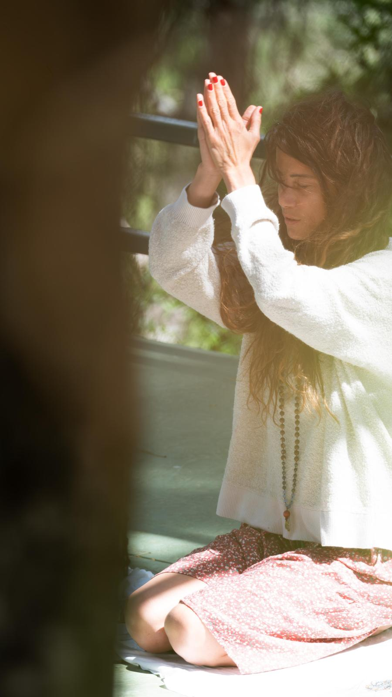

Nefes · Sinir Sistemi · Varoluşsal Farkındalık
İçsel dönüşüm, daha fazlasını eklemekle değil —
taşımanın gerekmeyenleri bırakmakla başlar.

Nefes · Sinir Sistemi · Varoluşsal Farkındalık
1981 İstanbul doğumlu olan Salâma, kurumsal hayatla başlayan profesyonel yolculuğunu, insanın içsel mekanizmalarını anlamaya yönelik çok katmanlı bir araştırma ve uygulama sürecine dönüştürerek, bugün nefes, sinir sistemi ve varoluşsal farkındalık alanlarını bütünsel bir yaklaşımla ele alan özgün bir sistemin kurucusu olarak çalışmalarını sürdürmektedir.
Çocukluk yıllarından itibaren kozmoloji ve fizik alanına duyduğu ilgi, yalnızca teorik bir merak olarak kalmamış; insanın varoluşunu, bedenin sınırlarını ve bilincin katmanlarını anlama yönünde derin bir içsel araştırmaya dönüşmüştür.
Meditasyon pratiğine başlamasıyla birlikte, zihinsel süreçlerin ötesine geçmeyi hedefleyen disiplinli bir çalışma sürecine giren Salâma, Mooji'nin öğretisi doğrultusunda farkındalık temelli pratiklerini derinleştirmiş, meditasyonu bir teknik olmaktan çıkararak yaşam biçimine dönüştürmüştür.
Aynı süreçte Master Choa Kok Sui'nin enerji beden sistemine yönelik öğretileriyle tanışarak çakra, aura ve enerji akışları üzerine kapsamlı eğitimler almış; insanın çok katmanlı yapısına dair bütünsel bir perspektif geliştirmiştir. Eş zamanlı olarak Kur'an-ı Kerim çalışmaları ve tasavvufi yaklaşım üzerine yaklaşık 11 yıl boyunca farklı öğretmenlerle yürüttüğü süreç, doğu ve batı disiplinlerini bir arada değerlendirebilen özgün bir bakış açısı geliştirmesine olanak sağlamıştır.
Nefes çalışmaları alanına yönelen Salâma, Mustafa Kartal ile aldığı eğitimlerin ardından Antalya'da ilk nefes atölyesini kurmuş; anatomik nefes, beden farkındalığı ve sinir sistemi üzerine geliştirdiği uygulamalarla çalışmalarını derinleştirmiştir.
Judith Kravitz ile Transformational Breath eğitimi sürecine dahil olarak uluslararası nefes teknikleriyle çalışmalarını genişletmiş, 500'ün üzerinde bireysel seans gerçekleştirerek nefesin yalnızca bir teknik değil, insanın içsel dönüşümünde temel bir araç olduğunu ortaya koymuştur.
İkinci nefes atölyesini açan Salâma, 2018–2026 yılları arasında gerçekleştirdiği 9 nefes kampı, 3 spiritüel farkındalık kampı ve 8 nefes eğitmenlik eğitimi ile bu alanda hem uygulayıcı hem de eğitmen yetiştiren bir yapı kurmuştur. Aynı dönemde Anadolu Üniversitesi İlahiyat Fakültesi'nde eğitimine devam ederek insanın içsel yapısını akademik perspektiften de ele almıştır.
Salâma'nın çalışmalarında temel bir kırılma noktası. Uzun yıllar boyunca öğrendiği tüm yöntemlerin ve tekniklerin, dönüşümün kendisi değil, yalnızca araçları olduğunu fark ederek üç yıl süren derin bir içsel inziva sürecine girmiştir. Bu süreçte geliştirdiği yaklaşım, insanın sinir sistemi, nefes alışkanlıkları, bedensel hafızası ve bilinç yapısı arasındaki ilişkiyi doğrudan ele alan yeni bir sistemin temelini oluşturmuştur.
Nefes, sinir sistemi düzenlenmesi, beden farkındalığı ve varoluşsal sorgulamayı bir araya getiren bu sistem aracılığıyla, bireylerin yaşamlarında kalıcı ve sürdürülebilir bir dönüşüm yaratmalarına rehberlik etmektedir.
Her program, bireyin kendi doğal dengesine dönmesini hedefleyen yapılandırılmış bir dönüşüm sürecidir.
Salâma'nın çalışmaları, insanın içsel dünyasını dönüştürmenin dışsal yaşam üzerindeki etkilerini doğrudan gözlemleyen, deneyimleyen ve sistematik bir yapıya dönüştüren bir yaklaşımın sonucudur. Kontenjan sınırlıdır.